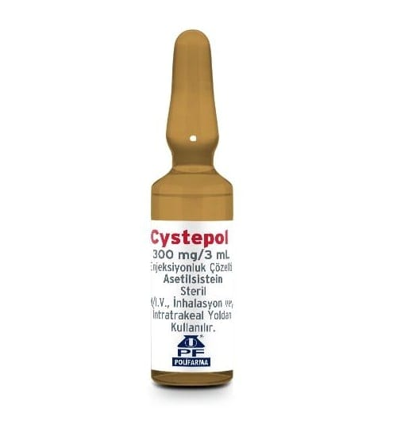

Cystepol 300 mg/3 ml Enjeksiyonluk/İnfüzyonluk Çözelti, 10 Adet

Ne için kullanılır
KT · Bölüm 1CYSTEPOL, 300 mg asetilsistein içeren 10 ampul içeren ambalajlarda bulunur.
CYSTEPOL, etkin madde olarak asetilsistein (insan saçı ve kanatlı hayvan tüyü kaynaklı) içerir. Asetilsistein, bir amino asit olan sistein türevi bir ajandır. Balgam söktürücü etkiye sahiptir.
CYSTEPOL, yoğun kıvamlı balgamın atılması, azaltılması, yoğunluğunun düzenlenmesi, ekspektorasyonun (balgamın atılabilmesi) kolaylaştırılması gereken durumlarda, bronkopulmoner(bronş ve akciğer) hastalıklarda, bronşiyal sekresyon (solunum yolu salgısı) bozukluklarının tedavisinde kullanılan mukolitik (balgamı, mukusu parçalayan) bir ilaçtır.
Ayrıca yüksek doz parasetamol alımına bağlı olarak ortaya çıkan karaciğer yetmezliğinin önlenmesinde kullanılır.
CYSTEPOL soğuk algınlığı ve solunum yollarının iltihaplanması (bronşit) durumunda balgam oluşmasını azaltır. Oluşan balgamları sulandırarak öksürükle atılmasını kolaylaştırır.